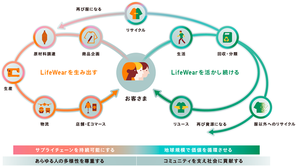
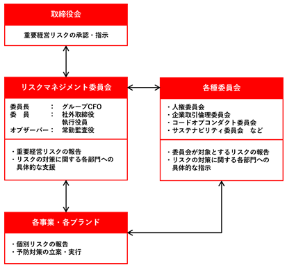

記載された事項で、将来に関するものは、有価証券報告書提出日現在（2025年11月28日）、入手可能な情報に基づく当社の経営判断や予測によるものです。
ファーストリテイリンググループは、「服を変え、常識を変え、世界を変えていく」という企業理念を掲げ、世界中のあらゆる人々に、良い服を着る喜び、幸せ、満足を提供することをめざします。
私たちの服づくりのコンセプトであるLifeWear（究極の普段着）は、あらゆる人の生活をより豊かにする、生活ニーズから考え抜かれたシンプルで上質な服です。着心地が良く、快適な時間を過ごせる服、資源を無駄にしない服へのニーズの高まりに伴い、世界中でお客様からの支持が拡大しています。2025年８月期は、日本、韓国、東南アジア・インド・豪州地区、北米、欧州のユニクロ事業が２桁の大幅な増収増益を達成し、グローバルで着実に利益を上げられる体制がより強固になりました。
LifeWearのコンセプトは唯一無二であり、グローバルで大きな成長余地があります。欧州、北米のアパレルの市場規模120兆円規模のうち、私たちの市場シェアはその１％未満です。東南アジア・インド・豪州地区、グレーターチャイナでも数％以下と、拡大のポテンシャルが多く残されています。LifeWearの価値観がグローバルに浸透し、生活に必要不可欠なブランドになることができれば、10%を超える市場シェアを実現できると考えています。そのために、下記の課題に経営資源を重点的に投入し、高成長を継続していきます。
世界中のあらゆるお客様から信頼され、生活に必要不可欠なブランドになることを目標に、事業規模だけでなく、企業風土を含めた事業の質の面でも、グローバルNo.１をめざします。2023年８月期を第４創業の始まりと位置づけ、売上収益10兆円をめざします。その中間目標として、2028年８月期を目途に売上収益５兆円の達成をめざし、事業基盤を強化していきます。
＜対処すべき課題＞
(1) 経営人材の育成
すべての従業員に対し、その属性に関わらず成長機会を与え、公正な評価と高い報酬で報います。特に、 経営人材の獲得と育成を重点課題とし、多様なキャリアパスによる「挑戦」、完全実力主義による「評価」、 常に抜擢・降格をともなう「登用」、経営者自らによる「育成」を通して、高い基準や理想をもって自ら考え、 実行できる従業員の育成に注力し、少数精鋭の組織を実現します。
(2) 事業の発展が、サステナビリティに寄与するビジネスモデルの追求
お客様が本当に必要とするものだけをつくり、服の生産から輸送、販売までのプロセスにおいて環境や人権が守られ、商品の販売後もリユースやリサイクルなどを通して循環するビジネスを追求します。そして当社グループの発展が、世界中の人々の生活や社会をより豊かにすることにつながる事業活動のあり方をめざします。これを実現するために、温室効果ガスの削減、トレーサビリティの確立、リサイクル・リユース、多様性の推進、社会貢献活動などの領域で2030年８月期目標を定め、取り組みを加速しています。
(3) お客様のニーズに応え、顧客を創造する
●お客様起点の商品づくりを強化
アプリ会員基盤や店舗網を活かし、お客様の声を収集、分析し商品開発に活かすことで、お客様のライフスタイルの変化を捉えた「本当に欲しい商品」の開発を加速します。
●個店経営の進化
地域・個店のお客様のニーズに合った商品構成、SKU管理、情報発信に磨きをかけることで、より高いお客様満足と生産性の向上を実現します。そのために、店舗人材の育成の強化、本部と店舗が一体となって 課題解決を行う働き方に変革します。
●店舗とEコマースの質的進化
最高の立地にLifeWearを伝える店舗、生活インフラとして必要不可欠な店舗を中心に店舗網を拡大します。また、店舗とＥコマースが一体となった購買体験を実現するために、Eコマースの操作性や、サプライチェーンを含む利便性を見直すと同時に情報発信を強化します。
(4) グローバルで収益の柱を多様化
●海外ユニクロ事業の成長を加速
北米、欧州は、既存店、Ｅコマースの売上拡大と同時に、旗艦店、大型店の出店を継続することで、高成長をめざします。現地人材の育成・抜擢も強化することで、より強固な経営体制を構築します。東南アジア・インド・豪州地区は、売上成長を実現しながら、店舗運営や商品構成、人材育成など将来の成長加速に向けた事業基盤の確立に注力します。グレーターチャイナは、店舗のスクラップ＆ビルド、ブランディング、個店経営の強化など、事業構造改革を推進し、成長軌道への回帰を図ります。
●国内ユニクロ事業は安定成長を継続
店舗の大型化・メディア化、個店経営の強化、値引率の改善、生産性の向上など、積極的に変革を推進し続けることで、売上、利益ともに安定成長をめざします。
●グローバル視点での経営へ変革
各国・各地域、そしてグローバルヘッドクオーターが常に有機的につながり、課題発見・解決、意思決定をグローバルの視点で推進します。また、商品、売り場づくり、Eコマース、マーケティング、物流において、グロー バルヘッドクオーターの機能を進化させます。
(5) グループブランドの拡大
●ジーユー事業
ジーユー独自のブランド価値を商売で具現化するとともに、経営の基本を徹底し、確固たるブランドポジション の確立を図ります。そのために、品番数を絞り込み、商品一つひとつの完成度を上げます。同時に、販売計画を軸に各部門が連携した働き方に変え、生産調整能力も高めることで、欠品や在庫過剰をなくします。
●グローバルブランド事業
ユニクロで培った商売の原理原則や情報製造小売業の基盤を活用し、各事業の経営水準を高め、それぞれが各国・各地域での確かなブランドポジションの確立をめざします。
(6) インフレ時代に合わせた経費構造の改革
人材、IT、店舗、倉庫、ブランディングへの投資を積極的に行うと同時に、投資した資産の徹底的な活用、生産性の向上、付加価値の拡大を図ります。また、購買プロセスを改善し、より高い経費効率を実現します。
ファーストリテイリングは、「服を変え、常識を変え、世界を変えていく」という企業理念を掲げ、よい服をつくり、よい服を売ることで、世界をよい方向へ変えていくことをめざして、事業活動を続けています。「よい服」とは、シンプルで、上質で、長く使える性能をもち、あらゆる人の暮らしを豊かにできる服。自然との共生を考え、つくられる過程で革新的な技術を使い、地球に余計な負荷をかけない服。健康と安全と人権がきちんと守られた環境で、いきいきと働く多様な人々の手でつくり届けられる服です。こうした考えをカタチにしたのがLifeWearです。
アパレル産業は、大量生産・大量消費による資源やエネルギー・水使用の増加、服のライフサイクルの短命化、大量の廃棄物問題などから環境負荷が大きく、また長く複雑なサプライチェーンにおいて労働環境に課題があることが指摘されてきました。当社では、2001年に社会貢献室（現、サステナビリティ部）を立ち上げ、難民支援を開始し、2004年に「生産パートナー コードオブコンダクト」の制定や取引先工場の労働環境モニタリング導入、2006年にリサイクル活動を全商品に拡大するなど、早くからサステナビリティ活動に取り組んできました。当社は、LifeWearというコンセプトがサステナビリティそのものであると考えており、事業と一体でサステナビリティ活動を進めています。以下はこうした当社の事業モデル全体を図示したものです。

「LifeWearを生み出す」過程では、お客様が本当に必要とするものだけをつくり、販売するとともに、服の生産から輸送、販売までのすべてのプロセスにおいて環境負荷の少ないモノづくりの実現と、人権に配慮され、お客様に安心してお買い求めいただけるサプライチェーンの構築を進めています。また、販売後の服にも責任をもち、リデュース・リユース・リサイクルなどを通して「LifeWearを活かし続ける」ために、服のリペア・リメイク・アップサイクルの推進や、回収衣料の難民への寄贈、古着販売、新しい服へのリサイクルなどの新たなサービスや技術の開発に取り組んでいます。さらに、複雑化する社会課題の解決に寄与するために、服の事業を通じた社会貢献やダイバーシティの取り組みをグローバルで拡大しています。
こうした取り組みにより、製品としての服だけではなく、服を生産する過程や販売方法、販売後の服にまで踏み込んだ「新しい産業」を創出し、これまでにない服のあり方を世界に提示することで、持続可能な社会への貢献と事業の成長を両立させていきます。
以降、(１)サステナビリティ共通、(２)気候変動（TCFD提言への取り組み）、(３)人的資本・多様性について、それぞれ①ガバナンス、②戦略、③リスク管理、④指標及び目標を記載しています。
(１) サステナビリティ共通
①ガバナンス
当社は、事業と一体でサステナビリティ活動を推進していくために、サステナビリティ委員会を設置しています。サステナビリティ担当取締役を委員長として、代表取締役会長兼社長を含む社内取締役、社外取締役、社内監査役、専門的知見を有する社外有識者、関連する執行役員が出席しています。委員会では、サステナビリティの各種方針や実行計画、目標、個別活動の課題や方向性などについて多様な観点から議論・決議するとともに、環境・人権・社会貢献などの各領域に関する進捗報告を受け、業務執行部門に対する助言・監督を行っています。当連結会計年度は４回開催し、気候変動、廃棄物、循環型ビジネス、社会貢献、コミュニケーション、多様性などのテーマについて議論を重ねました。
また、リスクマネジメント委員会、人事委員会、人権委員会、コードオブコンダクト委員会、企業取引倫理委員会といった、社内外の取締役・監査役、社外有識者、執行役員などが出席する委員会においても、環境や人権などの重要課題におけるリスクなどについて決議・監督などを行っています。また、監査役会は、サステナビリティに関するさまざまな課題をリスクとして認識し、業務執行部門に適宜報告を求めています。
当社では、サステナビリティの統括責任者である代表取締役会長兼社長が、サステナビリティを担当する取締役および執行役員を任命しています。当該取締役および執行役員は、担当領域に関する影響・リスク・機会を評価・管理するため、担当部門を指揮し、定期的に報告を受け、経営判断を行っています。なお、サステナビリティを担当する取締役および執行役員の報酬に関しては、変動報酬の評価基準に、担当領域に関連する定量または定性的な目標に対する成果を組み込んでいます。
また、事業と一体でサステナビリティ活動を着実に遂行していくため、各事業・各社の経営が中心となり、サステナビリティ部と連携しながら取り組みを実行しています。例えば、ファーストリテイリングが推進する「有明プロジェクト」*の中でも、サステナビリティ活動を重要課題として位置付けています。店舗・Ｅコマースでの販売や、生産・物流を含むサプライチェーンマネジメントの各部署が、温室効果ガス排出量の削減や廃棄物の削減、リサイクル素材を使用した商品の開発、トレーサビリティの確立など、サステナビリティの各課題に対して責任者を任命のうえ、目標とKPIを設定し、取り組みを進めています。
*有明プロジェクトは、お客様とダイレクトにつながり、お客様の声や世の中の情報を商品化し、最適な形でお届けする情報製造小売業へ変革するための全社改革です。デジタル技術などの活用により、サプライチェーンの仕組みと働き方を変え、グローバルな事業拡大と同時に「無駄なものをつくらない、運ばない、売らない」を実現し、お客様満足の向上、環境負荷の低減などサステナビリティの課題解決につなげます。
②戦略
当社では、経営戦略の一環として、サステナビリティ活動のなかで６つの重点領域（マテリアリティ）を定めています。特定にあたっては、国連が提唱する持続可能な開発目標（SDGs）やESG評価機関が求める指標などを参考に課題項目を洗い出し、自社における重要度やお客様などステークホルダーへの影響と期待を踏まえて重要度の高い要素を抽出、サステナビリティ委員会での議論を経ました。６つの重点領域（マテリアリティ）と主な取り組みは以下のとおりです。
|
重点領域（マテリアリティ） |
主な取り組み |
|
１. 商品と販売を通じた新たな価値創造 |
・LifeWearを服づくりのコンセプトに掲げ、企画の段階からタイムレスなデザインを追求し、シンプルで高品質、高い機能性をもち、長く愛用される完成された服をつくります。 ・服の機能性や品質だけでなく、社会の課題、環境問題などを解決することで、新しい価値を創造していくことをめざします。 ・ユニクロでは、服を活かし続けることで、循環型社会に移行するための取り組み「RE.UNIQLO」を推進し、REDUCE（服のリペア・リメイクサービスの提供など）、REUSE（衣料寄贈・古着販売など）、RECYCLE（リサイクル素材を使用した商品開発など）の活動を行い、服を長く着続ける楽しさを提案するとともに、環境負荷低減を図っています。 |
|
２. サプライチェーンの人権・労働環境の尊重 |
・サプライチェーンで働くすべての人の人権を尊重、労働環境の整備を最重要な責務と考え、トレーサビリティの追求と透明性の向上に取り組んでいます。 ・取引先工場に対し、「生産パートナー コードオブコンダクト」の遵守を要請し、それに基づく定期的な労働環境モニタリングを実施しています。また、主要縫製工場・素材工場の従業員向けのホットラインを設置し、生産パートナーとともに課題の早期把握と是正に努めています。 |
|
３. 環境への配慮 |
・「気候変動への対応」「エネルギー効率の向上」「生物多様性への対応」「水資源の管理」「化学物質管理」「廃棄物管理と資源効率の向上」を重点領域とし、各領域の目標を設定し、取り組みを進めています。 ・主要縫製工場・素材工場では、Cascale（旧サステナブル・アパレル連合）の環境評価ツール（Higgインデックス）を活用し、エネルギー、水、廃棄物など７つの分野で、環境負荷やリスクを把握し、工場とともに環境負荷低減に取り組んでいます。 ・気候変動に関する取り組みについては、(２)気候変動（TCFD提言への取り組み）をご参照ください。 ・生物多様性に関して、長期的に生物多様性に対するネットポジティブインパクト*の達成をめざし、バリューチェーン全体において生物多様性への影響を回避・軽減するとともに、生物多様性の保全・再生に向けた取り組みを進めています。 |
|
４. コミュニティとの共存・共栄 |
・難民などの困難な状況に置かれた世界中の人々に、服の寄贈や雇用、自立支援のサポートを継続しています。 ・平和を願うチャリティＴシャツプロジェクト「PEACE FOR ALL」では、利益の全額を、人道的支援を行っている国際的な団体に寄付しています。 ・未来を担う子どもや若者のエンパワーメントを後押しするための教育支援、社会進出支援を行っています。 |
|
５. 従業員の幸せ |
・ジェンダー平等、人種・国籍の多様性、障がい者の活躍推進、多様な性（LGBTQ+）への理解促進を軸に、ダイバーシティ＆インクルージョンをグローバルで推進しています。 ・すべての従業員に成長機会を与え、グローバルに活躍する人材の育成に取り組んでいます。 ・人的資本に関する取り組みについては、(３)人的資本・多様性をご参照ください。 |
|
６. 正しい経営 |
・取締役会の過半数を社外取締役にすることで、その独立性と監督機能を強化しています。 ・取締役会の機能を補完する各種委員会を設け、オープンで活発な討議を行っています。 ・詳細は |
* 生物多様性への正の影響が負の影響を上回っている状態
③リスク管理
当社は、リスクマネジメント委員会を設置し、事業活動に潜むリスクを定期的に洗い出し、重要リスクの特定とその管理体制の強化を行っています。個別のリスクを含むリスクマネジメントの詳細は
④指標及び目標
当社では、サステナビリティの主要領域で2030年度目標とアクションプランを策定しています。目標および主な取り組みの進捗は以下のとおりです。
|
項目 |
目標 |
主な取り組みの進捗 |
|
環境に配慮した服づくり |
||
|
温室効果ガス排出量削減 |
自社領域： ・2030年８月期までに温室効果ガス排出量を2019年８月期比で90％削減します。 ・2030年８月期までに、全世界の店舗と主要オフィスにおける再生可能エネルギーの割合を100％とします。 |
・2024年８月期は温室効果ガス排出量を2019年８月期比で83.3％削減（前期は同69.4％削減）しました。*１ ・2024年８月期の再生可能エネルギーの割合は84.7％（前期は67.6％）となりました。日本や台湾、韓国など一部の地域を除き、実質再生可能エネルギー100％を達成しました。*１ |
|
サプライチェーン領域： 2030年８月期までに温室効果ガス排出量を2019年８月期比で30％削減します。 |
・2024年８月期は温室効果ガス排出量を2019年８月期比で18.6％削減（前期は同10.0％削減）しました。*1 ・更なる温室効果ガス排出量の削減のため、2030年8月期までの温室効果ガス削減目標を20％から30％に引き上げました。 |
|
|
商品領域： 2030年８月期までに全使用素材の約50％について、リサイクル素材など温室効果ガス排出量の少ない素材に切り替えます。 |
・全使用素材に対するリサイクル素材など温室効果ガス排出量の少ない素材の使用割合は2025年８月期の商品全体で19.4％に上昇（前期は15.9％）しました。ポリエステルについては全使用量の46.4％（前期は41.5％）でリサイクルポリエステルを採用しました。*2 |
|
|
生物多様性ネットポジティブ |
バリューチェーン全体において生物多様性への影響を回避・軽減させ、生物多様性の保全・再生を進めることで、長期的に生物多様性に対するネットポジティブインパクトを達成します。 |
・2023年11月に生物多様性保全方針を策定・公表しました。 ・バリューチェーンにおける生物多様性のリスクアセスメントを実施し、影響の大きいカシミヤから取り組みを進めています。 |
|
水使用量削減 |
水消費量の上位80％を占める縫製・素材工場について、取引先ごとに目標を設定し、2025年12月末までに、各工場の単位当たり水使用量を2020年比で10％削減します。 |
・2023年12月末時点では、対象工場のうち51％（前年は49％）の工場が目標を達成しました。*3 |
|
廃棄物削減 |
お客様へ商品をお届けする過程で使用する資材の削減・切り替え・再利用・リサイクルを通して、できる限り廃棄物を削減した環境負荷の少ないモノづくりを実現します。 |
・使い捨てプラスチックの削減を最重要課題とし、2025年1月には、輸送用梱包袋や副資材などのプラスチック資材調達に関する社内ガイドラインを整備し、運用を開始しました。 ・商品輸送時に商品を梱包するプラスチック袋を削減し、リサイクルするプロジェクトを推進しています。 ・ハンガーや商品パッケージなどのプラスチック資材については、紙などの代替素材への切り替えを促進し、プラスチック使用量削減にむけた取り組みを推進しています。また、代替素材への切り替えが難しい場合は、リサイクル素材およびリサイクルが容易な素材への切り替えを推進しています。 |
|
有害化学物質の排出撲滅 |
2030年12月末までに、商品や生産プロセスにおける、排水基準の遵守による有害化学物質汚染ゼロを達成します。 |
2024年12月末時点では、主要な縫製・素材工場におけるZDHC排水基準の遵守率は99.7％（前年末は99.7％）となりました。 |
|
人と社会に配慮した服づくり |
||
|
サプライチェーンの透明性向上とトレーサビリティの確立 |
・サプライチェーンの透明性を高め、原材料レベルまでトレーサビリティを確立します。 ・サプライチェーン全体における人権、労働環境、環境の問題を特定し、確実に是正します。 ・2025年までに、お客様が安心して商品を選択するために必要な情報を特定し、順次開示します。 |
・2017年の主要縫製工場リストの公開以降、開示対象を拡大しています。2025年８月末時点で、継続取引のある全縫製工場、一部工程の外注先や継続的に当社商品素材を生産する素材工場などを開示しています。 ・商品ごとのサプライチェーン計画と実績を把握・確認する仕組みを構築し、2022年秋冬シーズンから、工場と連携してシステム上で運用を開始しました。2025年８月末時点で、ユニクロとジーユーの全商品の主素材について原材料の原産国までの商流を把握しています。 ・縫製工場と素材工場だけではなく、主要な紡績工場ともコードオブコンダクトを締結し、定期的な労働環境監査とトレーサビリティ情報の確認を推進しています。また、活動の範囲を生産プロセス以外の物流倉庫等にも拡大しています。 ・労働者の健康と安全に関わる新たな取り組みとして、気候変動による酷暑が縫製工場の労働者の健康に与える影響の調査を行い、対応策を検討しています。 ・2025年10月末時点で、日本および欧州や米国等、一部の国のユニクロとジーユーのオンラインストアの個別商品ページで、製品原産国やリサイクル素材の使用割合を掲載しています。また、欧州では素材生産国を掲載しています。 |
|
倫理的かつ責任ある方法による原材料の調達 |
植物系素材、動物系素材それぞれに調達方針を定め、倫理的かつ責任ある方法による原材料の調達を推進します。 |
お客様により安心して商品をお買い求めいただくため、「サステナブル素材」を再定義し、新たな原材料調達ガイドラインを定めました。温室効果ガス排出量や水使用量、生物多様性、人権、動物福祉など、素材の特性に応じて配慮すべき項目を定め、定性・定量の両面で基準に合致する素材を「サステナブル素材」とし、自社商品に採用すべき素材を明確にしています。 |
|
社会貢献活動のグローバル推進 |
・当社グループと、一般財団法人ファーストリテイリング財団、公益財団法人柳井正財団との協働により、服の事業を通じた社会貢献活動をグローバル規模でさらに拡大させます。 ・2025年８月期までに、100億円規模で社会貢献活動に投資します。また、グローバル全店舗で地域貢献活動を実施、難民や社会的に脆弱な立場の人々、次世代、文化芸術、スポーツの領域で1,000万人を支援し、衣料支援も年間1,000万着に拡充させます。 |
・2025年８月期は、社会貢献活動に123億円*4を拠出、594万着*5の衣料支援を実施しました。受益者は485万人です（前期は82億円、477万着、234万人）。 ・ユニクロの「PEACE FOR ALL」の活動による寄付金は、2022年６月の開始から2025年８月末までに総額25億88百万円となりました（前期末時点は総額16億68百万円）。 |
|
ダイバーシティ＆インクルージョンの促進 |
・2030年８月期までにグローバルで全管理職における女性比率を50％、うち執行役員30％に引き上げます。 ・2030年８月期までに全管理職における日本国籍以外の比率を、海外各事業会社を含むグループ全体の管理職80％（うち執行役員40％）、グローバルヘッドクオーター機能の管理職50％に引き上げます。 |
・グループ全体の女性管理職比率は2025年８月末時点で45.5％、うち執行役員9.3％（前期末は46.1％、9.4％）となりました。 ・日本国籍以外の管理職比率は2025年８月末時点で、海外各事業会社を含むグループ全体の管理職53.6％（うち執行役員16.7％）（前期末は55.5％、18.9％）、グローバルヘッドクオーター機能の管理職34.9％（前期末は32.8％）となりました。 |
*1 2025年８月期の実績は2026年４月頃に当社サステナビリティウェブサイトにおいて公表する予定です。
*2 2025年８月期より、精度向上を目的に、対象商品を前年秋冬商品と当年春夏商品に見直しました。
*3 2024年12月末時点の実績は2025年12月頃に当社サステナビリティウェブサイトにおいて公表する予定です。
https://www.fastretailing.com/jp/sustainability/environment/
*4 当社グループ、FR財団、柳井正財団、個人による活動を含みます。
*5 お客様から回収された服を含みます。
(２) 気候変動（TCFD提言への取り組み）
気候変動への影響を軽減するため、商品の生産から廃棄までを含む、事業活動全般における温室効果ガス排出量の把握と削減に取り組んでいます。取り組みの推進にあたっては、気候変動枠組条約に基づいて策定された長期目標（パリ協定）における2050年までの温室効果ガス排出量削減目標を尊重し、具体的な目標を掲げ、目標達成に向けた活動を推進しています。
①ガバナンス、③リスク管理
(１)サステナビリティ共通 ①ガバナンス、③リスク管理をご参照ください。
②戦略
パリ協定の達成に向けて、世界の平均気温上昇を抑えるための取り組みを強化しています。また、気候関連のリスクと機会がもたらす事業への影響を把握し、戦略の策定、実行を進めています。
Ⅰ温室効果ガス排出量の削減に向けた取り組み
|
有明プロジェクトの推進 |
・有明プロジェクトを推進し、より高いレベルで実行することで、「無駄なものをつくらない、運ばない、売らない」を実現し、お客様満足の向上と、環境負荷の低減につなげていきます。 ・世界中の店舗やＥコマースを通じて集まるお客様のご要望など、膨大な情報を分析することで、お客様のニーズを起点にした商品づくりを行っています。 |
|
自社領域（店舗と主要オフィス） |
・店舗では、電力の使用そのものを減らす省エネルギーと、自ら電気を生み出す創エネルギーに取り組んでいます。さまざまな省エネ技術による消費電力の削減や、太陽光パネルによる発電など、エネルギー効率を高める工夫を採用したロードサイド店舗（ユニクロ 前橋南インター店など）を増やしています。 ・再生可能エネルギー100％の目標達成に向けて、太陽光発電設備の設置や電力会社が提供する再エネメニューの購入、再エネ電力証書の購入などを進めています。 |
|
サプライチェーン領域 |
・ユニクロとジーユーの生産量の約９割を占める主要工場を対象に、国や地域、工場の特性によって異なる個別の課題を把握し、丁寧に対応して解決に取り組むことで、省エネルギー施策、脱石炭の推進、再生可能エネルギーの導入を着実に推進しています。主要工場とは、温室効果ガス削減計画の策定を完了しており、３か月に１度、進捗確認や計画の見直しを行い、密に連携しています。また、個別工場のニーズに応じて、再生可能エネルギーの導入に向けた助言や計画実行に必要な資金の調達先の紹介などを実施しています。2025年５月からは、更なるエネルギー削減に向けた支援として、主要な素材工場および一部の縫製工場へ省エネルギー診断の提供を開始しています。 |
|
商品領域 |
・リサイクル素材など温室効果ガス排出量の少ない素材への切り替えを進めています。化学繊維はリサイクル技術が比較的発達しているため、リサイクル素材への切り替えが進めやすく、現在では特にポリエステルにおいて取り組みが進んでいます。天然素材であるコットンやウールなどについても取り組みを継続しています。コットンでは環境への取り組み結果を定量的に示すことができ、環境・人権等の課題を効果的かつ継続的に改善する仕組みを持つ農法・認証などのコットン（例えば、環境再生型農業にて生産されたコットン）への切り替えを進めています。ウールなどでは、取引先パートナーとともに、既存商品と同等の品質、着心地のよさを実現できる素材の研究開発を進めています。 ・具体的には、ユニクロのドライEXやエアリズム、ヒートテック、ファーリーフリースといった商品群でリサイクルポリエステル、ポケッタブルパーカ等のアウター製品でリサイクルナイロンを採用しています。その他、一部のUTやジーンズでリサイクルコットンを採用しています。 |
|
RE.UNIQLOの推進 |
・ユニクロでは、服を活かし続けることで、循環型社会に移行するための取り組み「RE.UNIQLO」を推進し、REDUCE・REUSE・RECYCLEの活動を行っています。 ・「REDUCE」では、「RE.UNIQLO STUDIO」において、お客様に愛着ある服を大切に着続けていただくため、リペア・リメイクサービスの提供と一部の国と地域でアップサイクル品を販売しています。同スタジオは、2025年８月末時点で22の国・地域、63店舗で展開しています。 ・「REUSE」では、難民・国内避難民への衣料支援に加え、「UNIQLO古着プロジェクト」として、2025年８月期は、新たに郊外立地の店舗を加えた国内３店舗(ユニクロ世田谷千歳台店、ユニクロ天神店、ユニクロ前橋南インター店)で古着のトライアル販売を行いました。 ・「RECYCLE」では、回収した服を新しい服や資材としてよみがえらせ、再びお客様にお届けする取り組みを進めています。例えば、回収したダウンジャケットのダウンとフェザーを抽出し、新しいダウンジャケットの原材料として活用しています。また、2026年にイタリアで開催予定の世界的スポーツ大会では、ユニクロの店舗で回収したリサイクルダウンを100％使用したジャケットや、リサイクルダウンとパフテック（高機能中綿）を組み合わせたハイブリッドなジャケットなどをスウェーデン代表選手団に提供します。 |
Ⅱ気候変動に関するリスク・機会のシナリオ分析
当社は、事業に対する顕在的・潜在的なリスクを想定したうえで、リスクを予防し、適切に管理および対応することが、事業の持続的な成長に不可欠だと考えています。以下の２つのシナリオを参照し、2100年までの平均気温の上昇が産業革命以前と比べて２℃未満の場合と、４℃の場合について、2030年までを対象期間として、気候変動が自社およびサプライチェーンにもたらすリスクと機会、対応策を検討しました。
|
・国際エネルギー機関（IEA）の「持続可能な開発シナリオ」および「２℃未満シナリオ（B2DS）」 ・気候変動に関する政府間パネル（IPCC）の「第５次報告書（RCP8.5）」 |
Ⅲ気候変動に関するリスク・機会
|
リスク |
２℃未満の場合 |
規制 |
炭素税・カーボンプライシング、排ガス規制 |
・炭素税などの税制または規制強化により、サプライチェーンにおいてコストが上昇し、その結果生産コストが上昇する ・炭素税などの税制または規制強化により、自社店舗の運営コストが上昇する ・EUの燃費・排ガス規制など、中国、ベトナム、バングラデシュ、インドネシアの拠点を中心とする生産国や、日本、東南アジア、EUなどの販売国における規制強化により、物流費が上昇する |
|
市場 |
お客様の価値観の変化 |
お客様が環境負荷の低い素材、商品やサービスを好まれるようになり、変化するニーズに対応できない場合、売上が減少、評判が低下するリスク |
||
|
４℃の場合 |
急性・慢性 |
自然災害の増加 |
・自然災害による原材料生産への影響や、生産施設の被害、サプライチェーン寸断により生産停止・遅延や物流遅延が発生し、売上が減少、調達コストが上昇する ・自然災害による店舗の営業停止に伴い売上が減少する |
|
|
気温の上昇 |
・気象パターンの変化による原材料生産への影響により調達コストが上昇する ・気温の変化に対応しない商品構成により売上が減少する |
|||
|
機会 |
２℃未満の場合 |
自社・サプライチェーン |
・省エネルギー推進や再生可能エネルギー導入などにより、サプライチェーンにおけるコスト上昇を抑制し、生産コストの低下につながる ・再生可能エネルギーの導入・省エネルギー推進により、自社の店舗のコスト上昇を抑制し、コスト削減につながる ・上記対応により、お客様からの評判が向上し、ブランドイメージの向上につながる |
|
|
商品・サービス |
・温室効果ガス排出量の少ない素材を開発することで、新たな需要の創造、お客様の評判の向上につながる ・RE.UNIQLO活動の加速により、需要の創造、お客様の評判の向上につながる ・サステナビリティ活動の情報発信強化によるお客様の評判の向上につながる |
|||
|
４℃の場合 |
商品・サービス |
・新しい機能性素材により新しい需要の創造につながる ・環境変化に対応した商品の需要増加につながる |
||
Ⅳ気候変動に関するリスク・機会への対応戦略
・２℃未満に気温の上昇が抑えられた場合と、４℃まで気温が上昇した場合、どちらのシナリオが実現した場合でも、服、特にLifeWearへの需要は変わらないと考えています。温室効果ガス排出量がより少ない素材や、循環型の商品、気候変動に対応した商品（例えば、ヒートテックやエアリズム）といったお客様のニーズに合った商品を開発することで、市場優位性が増し、売上は拡大すると考えています。
・２℃未満の場合、サプライチェーンへの影響としては、炭素税などの税制、規制強化、電気料金の上昇など、生産や店舗におけるコストが上昇するリスクがありますが、省エネ推進や再エネ導入で、リスクを低減させることができます。自動車やトラックの燃費・排ガス規制など、EUをはじめ世界各国で規制強化が進む場合、物流費が上昇するリスクがありますが、ハイブリッド・EV等の環境対応車への移行を促進することや、有明プロジェクトを通じた物流効率の向上などを行うことで、リスクの低減が可能です。
・４℃の場合は、干ばつや大雨など異常気象の多発や、水不足などの物理的リスクにより、生産、物流、販売のサプライチェーン全体に甚大な影響を及ぼすことが想定されますが、原材料、生産工場などの調達先の分散や、長期的な契約・パートナーシップにより、リスクを低減することが可能です。物流や店舗についても、地域の分散や、BCPの観点からの立地などの選定、災害訓練により、物理的なリスクを最小限に抑えることができます。また、夏の長期化や暖冬によるお客様ニーズの変化へフレキシブルに対応できるよう、年間定番商品の在庫を確保しており、柔軟に対応することができます。
・当社はSPAであるため、潜在的、顕在的なリスクに対し、柔軟に対応を行うことが可能です。お客様のニーズの変化に対応した服づくりや、原材料、生産工場などの調達先の分散化、輸送形態の多様化、物流拠点の選定、販売店舗の立地の選定にBCPの視点を取り入れるなど、気候変動への対策が進まず、気温上昇が抑えられなかった場合を想定した対応策を講じています。
・これらの戦略の妥当性と進捗については、適切な情報開示を行い、機関投資家をはじめステークホルダーの皆様との対話や、各種ESG評価の指標への対応を行うことにより、持続的な企業価値向上につながると考えています。
④指標及び目標
当社は、気候変動について、以下の2030年８月期目標とアクションプランを策定しています。
|
・2030年８月期までに、店舗と主要オフィスなど、自社運営施設におけるエネルギー使用由来（スコープ１、スコープ２）の温室効果ガス排出量を90％削減（2019年８月期比） ・2030年８月期までに、ユニクロ・ジーユー商品の原材料生産・素材生産・縫製に関わる温室効果ガス排出量（スコープ３、カテゴリ１）を30％削減（2019年８月期比） |
この目標は、国際機関SBTイニシアティブより、パリ協定の目標に基づいた温室効果ガス排出量の削減目標であるSBT（Science-Based Targets）として認定されました。さらに、2050年の温室効果ガスの排出量実質ゼロに向けて、取り組みを強化していきます。
温室効果ガス排出量は「GHGプロトコル」に準じて算定しており、2024年８月期までの実績は以下のとおりです。
2025年８月期の実績は、2026年４月頃に当社サステナビリティウェブサイトにおいて公表する予定です。
https://www.fastretailing.com/jp/sustainability/environment/climatechange.html
Ⅰ 自社（店舗、オフィスなど）
単位：t-CO2e、範囲：ファーストリテイリンググループ
|
スコープ |
項目 |
2019年８月期 |
2022年８月期 |
2023年８月期 |
2024年８月期 |
|
|
スコープ１ （自社直接排出） |
ガス |
|
|
|
|
|
|
スコープ２ （自社間接排出） |
電気 |
ロケーションベース |
|
|
|
|
|
マーケットベース |
|
|
|
|
||
|
2019年度比（スコープ１とスコープ２マーケットベース値合計の削減進捗） |
- |
-45.7％ |
-69.4％ |
-83.3％ |
||
スコープ１、スコープ２について、信頼性向上のため、2018年８月期以降、第三者検証を実施しており、2024年８月期はBSIグループジャパン株式会社による検証を受けました。
検証範囲：2019年８月期は国内主要オフィスと国内ユニクロ・ジーユーの店舗のみ、2022年８月期、2023年８月期、2024年8月期はファーストリテイリンググループ
Ⅱ自社以外（サプライチェーンほか）
単位：t-CO2e、範囲：ファーストリテイリンググループ
|
スコープ３におけるカテゴリ |
2019年８月期 |
2022年８月期 |
2023年８月期 |
2024年８月期 |
|
１ 購入した製品・サービス |
4,694,117 |
4,243,676 |
3,977,760 |
3,630,293 |
|
カテゴリ１のうち、商品の原材料生産・素材生産・縫製に関わる排出量（ユニクロ・ジーユー、2030年８月期目標対象範囲） |
4,165,738 |
3,906,500 |
3,749,320 |
3,389,624 |
|
2019年８月期比 |
- |
-6.2％ |
-10.0％ |
-18.6% |
|
２ 資本財（対象外） |
- |
- |
- |
- |
|
３ 燃料・エネルギー関連の活動 （スコープ１またはスコープ２に含まれないもの） |
43,836 |
24,815 |
15,536 |
6,392 |
|
４ 上流の輸送・流通 |
355,654 |
552,711 |
503,393 |
644,578 |
|
５ 事業において発生した廃棄物 |
120,006 |
83,335*1 |
97,879 |
87,429 |
|
６ 出張 |
6,655 |
14,822*1 |
14,891 |
14,680 |
|
７ 従業員の通勤 |
61,120 |
54,554 |
54,809 |
54,031 |
|
８ 上流のリース資産（スコープ１・２で計上） |
- |
- |
- |
475*2 |
|
９ 下流の輸送・流通 |
- |
- |
- |
- |
|
10 販売した製品の加工（対象外） |
- |
- |
- |
- |
|
11 販売した製品の使用（対象外） |
- |
- |
- |
- |
|
12 販売した製品の使用後処理 |
438,926 |
764,228*1 |
750,291 |
759,664 |
|
13 下流のリース資産（対象外） |
- |
- |
- |
- |
|
14 フランチャイズ |
10,086 |
2,731 |
1,391 |
1,348 |
|
15 投資（対象外） |
- |
- |
- |
- |
*1 排出原単位または活動量のバウンダリの変更を行いました。
*2 算定対象を精査し、消化仕入れに該当する排出量を2024年８月期から算出しました。
スコープ３について、信頼性向上のため、2018年８月期以降、第三者検証を実施しており、2024年８月期はBSIグループジャパン株式会社による検証を受けました。
検証範囲：2019年８月期はカテゴリ１のユニクロ・ジーユー商品の原材料生産・素材生産・縫製に関わる排出量のみ、2022年８月期、2023年８月期、2024年８月期はファーストリテイリンググループのすべての対象カテゴリ
(３) 人的資本・多様性
①ガバナンス③リスク管理
(１)サステナビリティ共通 ①ガバナンス、③リスク管理をご参照ください。
②戦略
当社は、「グローバルワン 全員経営」の方針の下、全ての従業員に対し、性別、国籍、宗教、人種、年齢、所属、在籍期間などの属性に関わらず成長機会を与え、多様な人材が主役となって能力を発揮する環境をつくることで、企業理念である「服を変え、常識を変え、世界を変えていく」を実現し、広く社会に貢献していきます。
Ⅰ人材確保・育成の重点領域
当社の成長の原動力は、世界中で活躍する従業員です。「真・善・美」や「お客様志向」という共通の価値観に基づき、高い基準や理想をもって自ら考え、実行できる人材が、挑戦、実行、達成を続けることで、世界中のお客様に最も愛されるNo.１ブランドになるという目標の達成を実現できると考えています。そのために、特に以下の３分野での人材獲得と育成を重点領域とし、取り組みを強化します。
＜お客様の真のニーズに応える店舗販売員＞
地域の実情やお客様の真のニーズに合わせ、本当に心地よいサービスを提供するため、自ら考え、行動する店舗販売員
＜グローバル経営人材＞
国・地域、事業領域を超え、グローバルでリーダーシップを発揮することで、具体的な成果を上げ、社会に貢献する、店長をはじめとするグローバル経営人材
＜世界水準の高度専門人材＞
デジタル、IT、クリエイティブ、グローバルサプライチェーンマネジメントなど、世界水準の専門性をもち合わせると同時に、既存の概念にとらわれず、未来を創るための新しい機能・仕組みを世界水準で構築できる人材
Ⅱ人材確保の取り組み
＜ダイバーシティの推進＞
・あらゆる人の生活に寄り添うLifeWearを作り続けるために、豊かな個性と才能が融合された多様性あふれる組織の構築を推進します。グループの経営幹部となれる女性や外国人を積極的に採用し、国籍や経験に関わらず挑戦心や新しい発想をもつ人材を経営層や要職に抜擢し、適正な評価と必要な支援を行うことで、成長を積極的にサポートします。
・多様な人材が安心して働くためにさまざまな施策を推進しています。
■女性活躍推進の取り組みとして、女性人材開発会議、女性役員・役職者とのキャリアセッションを定期的に実施
■全ての従業員が、ライフステージに合わせた働き方を選択しキャリア形成が図れるように、ベビーシッター補助制度や託児支援制度などの人事制度、施策を実施
■従業員が介護に直面した場合でもキャリアを継続できるよう、介護両立支援プロジェクトを立ち上げ、介護に関する情報提供、管理職向け教育、職場環境の整備、個別相談窓口の設置などの支援体制を強化
■東京本部に所属する外国籍社員のキャリア構築を支援するために、メンター制度や、執行役員と少人数で対話する場としてのラウンドテーブルディスカッションを実施
■性的指向や性自認における多様性を尊重するために、2019年にパートナーシップ登録制度を導入し、さらにLGBTQ+ネットワーク組織「Symphony」の結成や、理解促進のために社内誌を発行
・障がいを持つ方を積極的に採用し、他の従業員と共に働くことを通じて、障がいの有無に関わらず全員が成長してお客様サービスを向上させられるよう取り組んでいます。
■2001年から国内のユニクロ店舗で「１店舗１名以上の障がい者を雇用」するという目標を掲げ、積極的に雇用を推進
■障がいを持つ従業員が、障がい特性、適性、経験に応じ多様な業務にチャレンジできるよう職域を拡大するための支援を実施
■障がい者雇用の意義や必要な配慮についての研修の実施
■2025年の国内ファーストリテイリンググループの障がい者雇用率は4.77%(日本法定比率は2.5%)。雇用している障がい者数は約1,200名（2025年6月）。同様の取組みを各国にも展開し、現在は東南アジアや欧州など、グローバルに雇用が広がり、グループ全体で約1,700名（日本国内の障がい者数を含む。2024年12月）の障がいのあるスタッフが勤務
＜新卒採用の高度化・多様化＞
・ブランド別・営業部門別の採用体制から、グループ一括採用に変更することで、当社が求める水準の人材を、ブランドを超えて確保します。また、デジタル、IT、クリエイティブ、グローバルサプライチェーンマネジメントなどの高度専門人材も、新卒から採用し、国を超えて育成していきます。
・グローバルで、店舗で活躍する意欲のある優秀な人材の採用を促進します。世界中の大学と連携し、各国で、また各国から日本へ招聘して実施されるグローバルインターンシップやワークショップなどを実施することで、当社のビジネスモデルや商売の本質への理解と共感を深めます。こうした施策を通して現場で活躍できる優秀な人材を発掘し、充実した初期導入教育を経て、経営幹部候補として育成していきます。
＜高度専門人材の中途採用の強化＞
世界水準の高度専門人材の採用を強化します。デジタル、IT、クリエイティブ、グローバルサプライチェーンマネジメントなど、新しい機能を構築し、事業拡大をリードする経営幹部人材を全世界から獲得します。
＜優秀な店舗販売員の確保＞
お客様とつながり、お客様の声を商品化し、最適な形でお届けすることをめざす「情報製造小売業」を現場で体現できる優秀な販売員の確保に取り組みます。報酬水準を引き上げ、優秀で意欲ある人材を惹きつけると同時に、実力、成長に応じた多様なキャリアパスを準備することで、優秀人材の定着を図ります。
＜グローバルで十分な競争力を有する報酬＞
グローバル各国の人材市場と報酬水準を常時モニタリングし、小売業を超えた全産業において十分な競争優位性のある報酬体系を維持すべく見直しております。これにより、上述の優秀な店舗販売員、グローバル経営人材、及び世界水準の高度専門人材の採用とリテンションに資すると共に、かかる一連の取り組みを通じて、人材の少数精鋭化を目指してまいります。
Ⅲ人材育成と公正な評価の取り組み
＜グローバルで成長機会を提供し、人材配置の最適化と、組織の多様性を推進＞
・グローバル規模の経営幹部の発掘・育成
次の10年を担う経営者候補人材がグローバルで多数存在します。こちらの経営者候補人材については、トップマネジメントを筆頭に執行役員が直接教育する他、次項のグローバルジョブローテーションや抜擢と合わせ、その才能を引き出し、最短で経営者に育て上げる取り組みを行っております。
・グローバルジョブローテーション
グローバルに経営幹部人材の配置を最適化することで、各国経営体制の強化を図っています。さらに、各国の優秀人材に対し、所属事業、所属国を超えたグローバルでの成長機会を戦略的に与え、成果を出した人は、各国の経営幹部へと抜擢します。
・グローバル社内公募
これまで各国で運営していた公募制度を、グループ・グローバルに拡大します。グループ・グローバルで必要なポジションを明示し、ブランドや所属国、所属部署を超えたポジションに、応募できるグローバル公募制度を設置することで、グローバルを舞台に自らキャリアを切り拓く機会を拡充しています。
・日本への育成派遣の拡充
世界各地の店舗で活躍する意欲ある海外の優秀な人材は、入社後に日本への育成派遣を行い、日本の店長や販売員が実現するお客様満足の基準、その背景にあるファーストリテイリングの理念や日本の文化を肌で感じることで、当社のグローバル経営人材候補として育成します。
＜ダイナミックで公正な人事評価と抜擢＞
当社では、職種階層別に求められる能力や要件を定義したグレード制度を採用し、その人の属性によらない、個人の能力に基づく評価・登用を半年ごとに実施しています。従業員の成長に応じて、グレードの飛び級を含めた大胆な抜擢を行うことで、成長を後押しします。また、評価の公正性、透明性を確保するために、直属の上司の評価だけでなく、部門単位で人事の担当者も含めた、評価会議と、一定のグレード以上の従業員については、グループ全執行役員で構成するグローバル評価会議で審査を行います。
＜販売員の育成と、多様なキャリアパスの整備＞
販売員は、公正な評価の下、能力に応じた昇進昇給制度やキャリアパスを設けています。また、販売員として成長していくために「ファーストリテイリングの理念・価値観教育」、「既存の商品知識を超えお客様のニーズに寄り添った商品提案力を培うための教育」など、必要な教育を適時適切に提供することで、長期で働き、成長できる環境を整備しています。さらに、意欲と能力があれば、販売員から店長、さらには経営人材へとキャリアを進めることができる多様なキャリアパスは、当社の創業以来の強みとして、さらに充実させていく方針です。
Ⅳ社内環境整備
＜FR Management ＆ Innovation Center＞
当社の社内人材育成機関(FR Management & Innovation Center)では、多様な人材が、ファーストリテイリングの経営理念や商売の原理・原則を理解し、それに基づいて、日々の商売のなかで能力を発揮できるような組織づくりを推進しています。具体的には、代表取締役会長兼社長である柳井正が著した「経営者になるためのノート」、「FRの精神と実行」、「FRは何を変えたのか」を使用した教育研修の実施や、柳井を含む各国のCEOなど、執行役員とのダイレクトセッションの機会、各種教育研修プログラムを展開しています。このほか、経営理念や経営者の考え方、商品情報、模範となる実践事例を、ショート動画として集約し、グローバル全社員が日常業務で活用できる全社教育プラットフォームの拡大も進めています。さらに、年２回、グローバルの全店長や本部社員および優秀な店舗販売員を集めた「FRコンベンション」を開催し、全社戦略や重要な経営メッセージの浸透を図っています。
＜グローバルヘッドクオーター機能の世界拡大＞
グローバルヘッドクオーター機能を日本のほか、米国や欧州にも拡大し、多様な人材が、最適な場所で、当社の基幹機能と世界でつながって仕事を進める体制を構築します。
＜従業員エンゲージメント調査の実施＞
従業員一人ひとりが意欲的に業務に取り組み、スピード感をもって成長する環境づくりを推進するために、グローバルの従業員を対象としたエンゲージメントサーベイを毎年実施しています。調査結果は、事業別、部署別に分析し、課題を特定することで、改善策のKPIを設定し、環境改善に向けた取り組みを推進しています。また、その進捗と効果の測定を行い、改善につなげています。
＜従業員一人ひとりが健康で安全に活躍できる職場環境づくり＞
・ファーストリテイリンググループ 安全衛生宣言
世界一「安全で健康に働ける会社」になることをめざし、安全衛生の基本方針および行動指針8カ条を定めています(ファーストリテイリンググループ 安全衛生宣言)
・労働安全衛生管理体制
「ファーストリテイリング ウェルネスセンター」を設置し、産業医や、保健師、産業カウンセラー、関連部門とともに、さまざまな安全衛生施策、メンタルヘルスケア、その他の従業員支援を推進しています。当該機能のグローバルへの拡大を図ると同時に、事業の経営とは切り離して、管理、運営することで、適切な運営と統制を図っています。
・労働時間削減
労働時間や休憩時間、休暇に関する国際基準と現地法令を遵守し、残業を前提としない働き方を推進しています。各部門の管理職者が従業員の労働時間を毎月管理するほか、各国、各事業の人事部門による部署横断的な労働時間の管理・監督を強化することで、長時間労働の撲滅を図っています。
④指標及び目標
上記方針の進捗を測る主な指標(
Ⅰ
|
|
女性比率 |
実績の内訳 |
||
|
|
目標 |
実績 |
就任者合計 |
うち女性 |
|
海外各事業会社を含むグループ全体の管理職＊ |
|
|
2,242名 |
1,020名 |
|
うち、執行役員(Global) |
30％ |
9.3％ |
54名 |
5名 |
＊管理職は、営業部ではブロックリーダー、エリアマネージャー、一定グレード以上の店長、本部では執行役員、部長、リーダーを指しています。より業務実態に沿った集計を行うために、店長については、2025年８月期より集計するグレードの範囲を拡大しています。
Ⅱ
|
|
外国人比率 |
実績の内訳 |
||
|
|
目標 |
実績 |
就任者合計 |
うち日本国籍以外 |
|
海外各事業会社を含むグループ全体の管理職＊ |
|
|
2,242名 |
1,202名 |
|
グローバルヘッドクオーター機能の管理職比率 |
50％ |
34.9％ |
725名 |
253名 |
|
うち、執行役員(Global) |
40％ |
16.7％ |
54名 |
9名 |
＊管理職は、営業部ではブロックリーダー、エリアマネージャー、一定グレード以上の店長、本部では執行役員、部長、リーダーを指しています。より業務実態に沿った集計を行うために、店長については、2025年８月期より集計するグレードの範囲を拡大しています。
ⅢFRグループエンゲージメントサーベイスコア(2025年実施分)
2025年度の調査結果では総合指数78.0％となりました(詳細は下表参照)。この結果を踏まえ、エンゲージメントの観点で課題調査とその改善活動に取り組んでいます。今後も調査を継続する予定です。
|
対象人数 |
40,583名 |
|
回答人数 |
36,827名 |
|
回答率 |
91％ |
|
総合指数(*) |
78.0％ |
*エンゲージメントに関する設問の内、肯定的な回答をしている社員の割合です
(1) 方針
当社は、大規模災害や顧客情報漏えいなど予期せぬリスクを想定したうえで、顕在的・潜在的なリスクを予防し、適切に管理することが、持続的な事業の成長には不可欠だと考えており、事業活動に潜むリスクを定期的に洗い出し、重要リスクの特定とその管理体制の強化を常に行っています。
取締役会直下の組織として、リスクマネジメント委員会を設置しています。グループCFOを委員長とするリスクマネジメント委員会は、全社のリスクを一元管理する組織です。リスクマネジメント委員会では、リスク事象の事業への影響度・頻度などを分析・評価し、リスクの高いものから、対応策が議論され、発生前のけん制を行うことをめざしています。また、取締役会への重要リスクの報告、およびリスクの対策に関する各部門への具体的な支援を行っています。

(2) 個別のリスク
有価証券報告書に記載した事業の状況、経理の状況などに関する事項のうち、当社グループの経営成績や財務状況などに特に影響度の大きいリスクとして認識している主なものとして、以下のものが挙げられます。文中における将来に関する事項は、本書提出日現在において当社グループが判断したものです。また、以下は、全てのリスクを網羅するものではなく、本書提出日現在において予見できないまたは重要と認識していないリスクの影響を将来的に受ける可能性があります。なお、リスクとその影響欄にて「顕在化している」旨の記載のない項目については、リスクの顕在化には至っておらず、顕在化する時期・可能性ともに未確実です。
|
リスク項目 |
リスクとその影響 |
主な取組み |
|
経営人材に関わるリスク |
代表取締役会長兼社長柳井正をはじめとする当社グループ企業経営陣が業務執行できなくなった場合、また、そのような重要な役割を担い得る人材を確保できなかった場合、当社の業績に悪影響を及ぼす可能性があります。 |
・当社グループの各事業では、意思決定および業務執行が特定の経営人材に依存することのないよう、チームによる経営執行体制を構築しております。 ・各事業における経営者自らが後継となる経営人材の育成を行っております。 ・グローバルに活躍できる経営人材を常時積極的に採用するほか、専門の教育機関を設け、採用した人材を経営者に教育・育成していくための体制を整えています。 |
|
リスク項目 |
リスクとその影響 |
主な取組み |
|
カントリーリスク、国際情勢に関わるリスク |
商品生産国・地域または事業展開国・地域における、政治・経済情勢の変動、テロ・紛争等による治安状態の悪化や社会的混乱、法制度・租税制度の変更、地震や風水害等の大規模な自然災害や世界的規模の感染症の発生等により、当社グループの商品の生産、供給および販売体制および業績に悪影響を及ぼす可能性があります。 |
・当社グループでは、生産拠点を複数の国・地域に分散するほか、主な生産拠点には生産管理事務所を置き、現地情勢の適時の把握、迅速な対応ができる体制を整えるなど、国際情勢の変化に機動的に対応できるサプライチェーンの確立を進めています。 ・当社グループ各社の拠点に、経理や税務・法務・広報などの専門家を置き、リスク発生時に迅速かつ適切な対応およびコミュニケーションができる体制を整えています。 ・特定の国・地域における国家間対立・民族的感情悪化に関しては、グローバル企業として、事業を展開する各国・地域における社会的課題を解決するための貢献を行い、各国・各地域コミュニティとの永続的な共存・共栄をめざしています。 |
|
環境に関わるリスク |
・温室効果ガス排出量の削減や再生可能エネルギーへの転換などの気候変動への対応、生物多様性への対応、水資源の管理、化学物質の管理、廃棄物排出量の削減、循環型ビジネスモデルへの移行などが遅れた場合や適切に行われなかった場合は、当社グループブランドに対する社会的信用の低下を招く可能性があります。 ・気候変動に伴う異常気象の増加により、商品供給体制をはじめ事業全体に悪影響を及ぼす可能性があります。
|
・当社グループの「環境方針」のもと、「気候変動への対応」「エネルギー効率の向上」「生物多様性への対応」「水資源の管理」「化学物質管理」「廃棄物管理と資源効率の向上」の６つの重点領域において、実効性が高い具体的な取り組みを継続的に実行しています。 ・気候変動への影響を削減するため、商品の生産から廃棄までを含む、事業活動全般における温室効果ガス排出量の把握と削減に取り組んでいます。また、気候変動に伴う異常気象についても、原材料・生産工場の調達分散化、BCP観点での立地選定などによりリスク低減を図っています。具体的な取り組みは２（サステナビリティに関する考え方及び取組）(２)気候変動（TCFD提言への取り組み） ②戦略をご参照ください。 ・バリューチェーン全体において生物多様性への影響を回避・軽減させるとともに、生物多様性の保全・再生に取り組むため、「生物多様性保全方針」に基づき取り組みを強化しています。 |
|
情報セキュリティリスク |
・顧客情報（個人情報を含みます）や営業秘密などの機密情報が流出・消失した場合、当該情報の回収や、損害賠償の支払などの対処を要し、業績への悪影響および顧客の信用低下を招く可能性があります。 ・欧州の個人情報保護規則であるGDPRなど、国・地域間の個人情報の移転を制限する法的規制に違反したと当該行政から判断された場合、多額の課徴金による業績への悪影響や顧客の信用低下を招く可能性があります。 ・当社グループのシステムや取引先のシステム等がランサムウェアなどによる被害を受けた場合、一部システムの機能停止に伴う業務継続が困難となる可能性があります。このリスクが顕在化した場合には、当社の商品供給体制、販売体制および業績に悪影響を及ぼす可能性があります。 |
・機密情報、個人情報の管理を徹底するために、グループ全体を統括するCSO(Chief Security Officer)指揮のもと、情報セキュリティ室を設置し、事業を展開する各国・各地域のIT部門及び法務部門と連携しています。 ・当社に対する外部からの攻撃、内部不正や事故などあらゆる事態を想定し、当社業務システム及び機密情報ならびに個人情報の適切な管理体制の構築・強化を行うために、各事業部門における規程類の整備・更新、情報管理態勢の整備、インフラ整備、業務プロセス評価、委託先評価、インシデント管理、当社業務システムに対する定期的なセキュリティ強化、フィッシング訓練をはじめとする定期的な教育啓発活動等を行っています。 |
|
大規模災害リスク |
当社グループの販売する商品の生産工場、販売店舗および本社機能を有する本部オフィスの存在する各地域において、地震、台風、火山の噴火、火災、風水害、爆発、建物倒壊等の大規模災害が発生した場合、供給および販売体制ならびに経営管理体制に悪影響を及ぼす可能性があります。 |
リスクマネジメント委員会を中心として、大規模地震、その他の大規模災害発生または発生の恐れがある場合の緊急対策本部による有事指揮体制の準備、顧客や従業員・関係者の安全確保、経営資源の被害軽減、二次災害防止、業務早期復旧のためのシステムインフラ並びに、復旧拠点の分散配置の整備、危機管理マニュアル等の整備、当該マニュアル等の世界展開を進めるための体制の整備に努めています。 |
|
資源管理・原材料調達に関わるリスク |
災害・気候変動その他の理由により、当社グループ各事業で販売する商品に使用する原材料（綿花やカシミヤ、ダウンなど）の十分な調達が困難になり、また価格が高騰する可能性があります。これらのリスクが顕在化した場合には、当社グループの商品供給体制および業績に悪影響を及ぼす可能性があります。 |
原材料調達先の地域分散および地域ごとに優良な生産者を特定した取引を進めることで、特定の調達先に依存することなくかつ適正な価格により調達する仕組みを整えているほか、代替素材の開発を進めています。 |
|
リスク項目 |
リスクとその影響 |
主な取組み |
|
人権に関わるリスク |
・当社グループ及びサプライチェーンにおいて、労働環境・安全衛生の悪化や人権侵害行為、特に、強制労働や児童労働、ハラスメント、差別的行為など、関係者の人権を著しく傷つける行為などが発生した場合には、当社グループに対する顧客および取引先の信用低下を招き、当社の商品供給や販売体制に悪影響を及ぼす可能性があります。 ・欧米をはじめとする各国・地域において、サプライチェーンの人権保護などを目的とする規制強化または法制化への対応により、当社グループの商品の生産・輸送・販売体制に影響を及ぼす可能性があります。 |
・当社グループ、取引先を問わず、当社グループ事業の影響を受けるすべての人の基本的人権を尊重し、心身の健康や安心・安全を確保することが最も重要な責務との考えのもと、FRグループ人権方針を定めています。 ・助言・監督機能として人権委員会を設置し、人権デューデリジェンスの実施、人権研修、通報窓口の運用などを通して人権侵害行為の発生を防ぎます。 ・サプライチェーンについては、サステナビリティ部を中心として、取引先工場の労働環境のモニタリング実施や、取引先工場の従業員向けホットラインの運用などを通して、適切な労働環境の維持と改善に努めています。原材料についても、国際基準に則って、生産工程で人権や労働環境が適正に守られていることが確認された原材料の調達を進めています。 ・国・地域を問わず、原材料調達レベルまでトレーサビリティを確立し、サプライチェーン全体で人権や労働環境の問題がないことを自社で確認する体制の構築を進めています。合わせて、第三者認証も活用し、人権や労働環境が適正に守られていることを客観的に検証していきます。 ・人権侵害に関する事象が発生した場合は、必要に応じて人権委員会にて調査・審議を行うほか、被害者の心のケアを行うための体制を整えています。 |
|
取引先に起因するリスク |
・商品の企画・生産・輸送・販売などに関わるあらゆる取引先に関する様々なリスクが存在します。 ・取引先と当社グループの価値観や理念が共有できず、経営効率が低下する可能性や、十分な債権回収ができず、業績に悪影響を及ぼす可能性、意図せず反社会的勢力と取引を行ってしまう可能性、取引先による法令違反行為が発生する可能性などがあります。リスクが顕在化した場合、当社グループに対する顧客および社会の信用低下を招く可能性があります。 ・このほか、例えば、輸配送業者による商品輸送時や倉庫業者による商品保管時に、災害や人為的行為による商品の滅失・毀損・盗難、取引先や現地法令に起因した商品の引取不能などが発生する可能性もあります。 ・日本においては2025年に施行された物流効率化法や2026年１月に施行される取適法等への取り組みが求められ、当社の取り組みが不十分とみなされた場合は行政指導の対象となる可能性があります。リスクが顕在化した場合、当社グループに対する顧客及び社会の信用低下を招く可能性があります。 |
・当社グループ各社では、不適切な取引先との間で取引関係を開始することを防止するため、新規取引先との取引開始時に必要に応じて与信・信用調査を行っています。 ・すべての取引先との適切な取引関係を構築することを目的に、「ビジネスパートナー行動指針」を定め、その内容をご理解のうえ、遵守していただける取引先と取引を行っています。 ・輸配送業者や倉庫業者との取引に関するリスクへの対策としては、各事業に物流担当を置いて、取引先輸配送業者や倉庫業者と常時コミュニケーションを取り、商品の輸送・保管における問題の発生時には速やかに現地経営とグローバル物流本部に報告し、迅速に対応を検討・実施する体制を整えています。また、倉庫業社との契約の標準化を行い、当社の行動指針（コードオブコンダクト）の遵守ならびに人権監査への協力を定め、グローバル全事業において統一的な運用を実施する体制を取っています。さらに、倉庫業社ならびにその受託会社を対象とした、外部専門機関による監査を定期的に実施し、重要なリスクの顕在化を未然に防ぐ体制、取り組みを強化しています。物流効率化法の要請に基づき「物流統括管理者」を配置する他、取適法に即した適切な価格協議などを行い、取引先との健全で安定した物流を展開します。 |
|
知的財産に関わるリスク |
・商品管理や店舗運営、Eコマースのウェブサイトを含むあらゆる分野で使用する最新の技術や当社グループの商品にかかる知的財産権などの権利につき、他者が保有していることが判明し、その結果、当該技術の使用や商品供給が困難となる可能性があります。 ・当該技術や商品、宣伝広告等が他者の知的財産権を侵害していた場合には、多額の損害賠償やライセンス費用の支払請求を受ける可能性が発生し、業績に悪影響を及ぼす可能性があります。 ・当社グループの商標又は商品を第三者に模倣され、安価で販売された場合、当社の経営成績に悪影響を及ぼす可能性があります。 |
・当社グループでは知的財産を取り扱う専門部署を設け、商品開発および技術導入時ならびに宣伝広告時等に事前調査を行っているほか、当社グループ内の従業員に対し知的財産に関する教育・啓発活動を実施し、他者の知的財産権の侵害防止に努めています。 ・新規技術を開発した際には積極的に権利化を行っています。さらに、事業展開国・地域および展開予定国・地域における市場モニタリング、現地法務部門や現地法律事務所、政府機関との連携を通じ、模倣品などによる被侵害の情報の収集をはかっています。 ・被侵害の事実が確認された場合、またはそのおそれがある場合には、現地法務部門や法律事務所、政府機関と連携し、速やかに法的措置を含めた対処を検討します。 |
|
リスク項目 |
リスクとその影響 |
主な取組み |
|
為替リスク |
・当社グループ各国事業では商品の多くを海外の生産工場から輸入しているため、各国・地域の通貨に対する決済通貨の急激な変動が発生した場合、各事業の業績に悪影響を与える可能性があります。 ・グループ全体として、事業展開に合わせて多様な通貨で金融資産を保有しているため、当社グループの機能通貨である円の為替変動によって金融損益が大きく変動する可能性があります。 |
・為替環境の激変緩和を目的として、各国・地域事業において、想定仕入見込み額に基づく先物為替予約を実行しています。この際、ヘッジ比率や期間など、具体的なヘッジ方針については、財務の安全性に資するかという観点から、当社取締役会において討議・承認を行っています。 ・金融資産の保有通貨の妥当性についても、当社取締役会で討議を行います。 |
|
減損リスク |
事業環境の変化等により収益性が低下した場合、有形固定資産および使用権資産などについて減損損失を計上する可能性があります。 |
・減損会計を厳格に適用して、適時に減損兆候の判定を行い、不採算店舗の発生を早期に把握、適切な会計処理を行っています。 ・当該店舗の収益性低下の原因を把握し、抜本的な収益改善計画を策定・実行しています。 |
|
その他経営環境の変化に起因するリスク |
当社グループ事業の展開各国・地域において、天候不良、気候変動、消費動向の変化等の経営環境の変化が生じることにより、商品の売上の減少や過剰在庫が発生し、業績に悪影響を及ぼす可能性があります。 |
各グループ事業の展開国・地域で、お客様が必要とする商品情報を適時に収集し、即時に商品化したうえで、必要十分な数量を生産販売できる体制を整え、経営環境の変化に極力機動的に対応していきます。 |
(1)業績等の概要
① 業績
当連結会計年度（2024年９月１日～2025年８月31日）の連結業績は、売上収益が３兆4,005億円（前期比9.6％増）、売上収益から売上原価と販管費を控除して算出する事業そのものの利益である事業利益が5,511億円（同13.6％増）と、増収、大幅な増益となりました。LifeWear（究極の普段着）へのお客様の支持がグローバルで高まり、４期連続で過去最高の業績を達成しました。金融収益・費用は、863億円のプラスとなりました。これは、利息がネットで524億円のプラスとなったことに加え、外貨建資産の換算などによる為替差益が338億円発生したことによります。この結果、税引前利益は6,505億円（同16.8％増）、親会社の所有者に帰属する当期利益は4,330億円（同16.4％増）となりました。
当連結会計年度の設備投資は1,719億円、前期比597億円増となりました。内訳は、国内ユニクロ事業が151億円、海外ユニクロ事業が1,200億円、ジーユー事業が77億円、グローバルブランド事業が14億円、システム他が274億円となっています。新規出店や自動化倉庫への投資など、グローバルでの事業成長のために積極的な投資を実行しています。
当社グループは、世界中のあらゆるお客様から信頼され、生活に必要不可欠な「グローバルNo.1ブランドになる」ことをめざしています。そのために、１）経営人材の育成、２）事業の発展がサステナビリティに寄与するビジネスモデルの追求、３）お客様のニーズに応え、顧客を創造する、４）グローバルで収益の柱を多様化、５）ジーユーをはじめとするグループブランドの拡大、６）インフレ時代に合わせた経費構造の改革、に注力しています。特に、海外ユニクロ事業はグループの成長の柱として、質の高い出店を継続していくことに加え、商品開発やブランディングの強化を図っています。また、サステナブルな社会を構築するために、LifeWearのコンセプトを大切にした服づくりを行っていきます。高品質で長く着ていただける服、地球環境への負荷を低減し、健康で安全な労働環境でつくられた服、販売された後もリサイクル、リユースなどで循環される服を追求していきます。
[国内ユニクロ事業]
国内ユニクロ事業の当連結会計年度の売上収益は１兆260億円（前期比10.1％増）、事業利益は1,813億円（同17.5％増）と、大幅な増収増益となりました。売上収益は初めて１兆円を突破し、過去最高の業績を達成しました。その他収益・費用に店舗の減損損失の戻し入れ益を計上したことで、営業利益は1,844億円（同18.4％増）となりました。既存店売上高（Ｅコマースを含む）は、通期で同8.1％の増収となりました。上期は前年同期比9.8％の増収、下期は同6.2％の増収と、期を通して販売は好調でした。気温に合わせて戦略的に商品を準備し、マーケティングの打ち出しと連動させたことで実需を捉えられたことに加え、スウェットやジーンズなど、コア商品にトレンドのシルエットやデザインを反映したことで新しい需要の喚起にもつながりました。売上総利益率は前期比0.1ポイント低下とほぼ前年並みの水準となりました。売上高販管費比率は、販売が好調だったことで、賃借料比率や人件費比率が低下し、前期比1.2ポイント改善しました。
[海外ユニクロ事業]
海外ユニクロ事業の当連結会計年度の売上収益は１兆9,102億円（前期比11.6％増)、事業利益は3,053億円（同10.6％増)と、大幅な増収増益、過去最高の業績を達成しました。
地域別では、グレーターチャイナの売上収益は6,502億円（同4.0％減）、事業利益は899億円（同12.5％減）と、減収、大幅な減益となりました。中国大陸は、通期では、現地通貨ベースで同約４％減収、事業利益は同約10％減となりました。ただし、当第４四半期連結会計期間の事業利益は、売上総利益率と売上高販管費比率が改善したことで、約11％増益となりました。香港は、商品構成の課題や消費意欲の低下の影響で、減収、大幅な減益となりました。台湾は増収、減益でしたが、ロイヤリティ費用増の影響を除くと若干の増益となりました。韓国と東南アジア・インド・豪州地区の売上収益は6,194億円（同14.6％増）、事業利益は1,169億円（同20.5％増）と、大幅な増収増益となりました。韓国は、気温に対応した商売やマーケティング戦略が奏功し、大幅な増収増益となりました。東南アジア・インド・豪州地区は、コア商品を中心に販売が好調で、大幅な増収増益となりました。北米の売上収益は2,711億円（同24.5％増）、事業利益は442億円（同35.1％増）、欧州の売上収益は3,695億円（同33.6％増）、事業利益は542億円（同23.7％増）と、大幅な増収増益となりました。両地域ともに、新規出店した店舗が大成功を収めたことに加え、店舗がメディアとなり、認知度が向上することで、Ｅコマース販売もさらに拡大する好循環ができました。なお、米国は、追加関税の影響が出始めた当第４四半期連結会計期間も、大幅な増収増益となりました。商品価格の見直しや値引率の改善、経費コントロールの強化などにより、追加関税によるコスト増を吸収し、事業利益率も改善しました。
[ジーユー事業]
ジーユー事業の当連結会計年度の売上収益は3,307億円（前期比3.6％増）、事業利益は283億円（同12.6％減）と、増収、大幅な減益となりました。マストレンドを捉えたヒット商品が十分でなかったことや、売れ筋商品の欠品により、既存店売上高は前年並みと、売上を最大化することができませんでした。利益面では、報酬引き上げに伴う人件費の増加や、米国出店に伴う費用増により、販管費比率が上昇し、大幅な減益となりました。
[グローバルブランド事業]
グローバルブランド事業の当連結会計年度の売上収益は、1,315億円（前期比5.3％減）、事業利益は26億円（前期は１億円の黒字）と減収増益となりました。営業利益は９億円の赤字（前期は６億円の黒字）となりましたが、これはコントワー・デ・コトニエ事業で事業構造改革に伴う減損損失などを39億円計上したことによります。セオリー事業は、主力商品の販売に苦戦したことに加え、中国大陸で消費意欲の低下の影響を受けたことで、減収減益となりました。プラステ事業は、ワイドパンツやシアーセーターなどの販売が好調で、大幅な増収増益となりました。コントワー・デ・コトニエ事業は、減収でしたが、売上総利益率と売上高販管費比率がともに改善し、事業利益の赤字は半減しました。
[サステナビリティ（持続可能性）]
ファーストリテイリングは、あらゆる人々の生活を豊かにする「究極の普段着」というLifeWearの考え方をもとに、品質・デザイン・価格だけでなく、環境配慮・人権保護・社会貢献を重視した服づくりを進めています。当社のサステナビリティ活動は、６つの重点領域（マテリアリティ）を主軸としています。当連結会計年度における主な活動内容は、以下のとおりです。
■商品と販売を通じた新たな価値創造：ユニクロでは、服を活かし続けることで、循環型社会への移行に貢献するための取り組み「RE.UNIQLO」を推進しています。ユニクロ店舗内で服のリペア・リメイクのサービス提供とアップサイクル品を販売（注）する「RE.UNIQLO STUDIO」は2025年８月末時点で22の国・地域、63店舗まで拡大しました。特にリメイクサービスでは、お客様のニーズを捉えたコラボレーション刺繍の展開などが寄与し、多くのお客様にご好評をいただいています。また、当社では、環境に配慮した素材の調達を強化しています。ユニクロの2025年春夏商品において、全使用素材に対するリサイクル素材など温室効果ガス排出量の少ない素材の使用率は17％、ポリエステル全使用量に対するリサイクルポリエステルの使用率は40％となりました。
（注）一部の国と地域で販売
■サプライチェーンの人権・労働環境の尊重：当社は人権・労働環境の尊重に関する取り組みを継続的に強化しています。取引先工場に「生産パートナー コードオブコンダクト（COC）」の遵守を要請、定期的に労働環境のモニタリングを実施し、課題があれば、工場に改善を求めるとともに、改善のための支援を行っています。また、当連結会計年度は、欧州におけるデューディリジェンスへの規制（サプライチェーン全体で人権に負の影響を与えるリスクを特定・評価し、予防するプロセス）が強化されることを考慮し 、外部の人権リスク評価ツールの導入、モニタリング項目の見直しに加え、モニタリングを実施する第三者監査員の品質管理体制を強化しました。
■環境への配慮：当社は、2030年８月期までに、自社店舗・オフィスの温室効果ガス排出量を2019年８月期比90％削減、サプライチェーンは同20％削減することを目標に掲げ、自社における再生可能エネルギー導入に加え、ユニクロ・ジーユーの主要取引先工場とともに温室効果ガス削減に向けた取り組みを着実に推進しています。サプライチェーン領域では、更なるエネルギー削減に向けた支援として、2025年５月から主要な素材工場および一部の縫製工場への省エネルギー診断の提供を開始しました。こうした気候変動に関する取り組みや開示が評価され、当社は、国際的な非営利団体CDPにより、気候変動領域において３年連続で最高評価の「Aリスト」企業に認定されています。さらに、サプライヤーとの協働についても、CDPより、２年連続で最高評価の「サプライヤー・エンゲージメント・リーダー」に認定されました。
■コミュニティとの共存・共栄：当社は、服のビジネスを通じて、社会の持続的な発展に寄与できるよう、社会的課題の解決に積極的に取り組んでいます。「PEACE FOR ALL」プロジェクト（注）では、2022年の活動開始以来の寄付総額が2025年８月末時点で25億88百万円、累計販売枚数は862万枚となりました。また、ユニクロは、2025年に開催された大阪・関西万博の国連パビリオンにて、国連難民高等弁務官事務所（UNHCR）とともに難民支援に関する共同展示を実施しました。パビリオンではその他にも、ユニクロが国連教育科学文化機関（ユネスコ）と共同で、中高生を対象に海洋ごみ問題を啓発する教育プログラムを紹介しました。
（注）著名人がボランティアでデザインしたグラフィックTシャツを全世界で販売し、得られた利益の全額（１枚あたり日本における定価の20％相当）を人道支援に取り組む団体に寄付するプロジェクト。
■従業員の幸せ：当社はジェンダー、Global One Team、障がい、LGBTQ+の４つを重点領域として、当事者サポートのための制度導入や研修実施など、多様性推進に向けた様々な取り組みをグローバルで強化しています。当連結会計年度は、グループ全体の多様性促進の取り組みおよびガバナンス/推進体制を強化することを目的に、「ダイバーシティ＆インクルージョン（D&I）課題解決会議」をスタートさせ、D&I調査も実施しました。調査結果を踏まえて各事業およびグローバルでの課題を特定し、各グローバル事業の経営者や担当執行役員と対応策について討議しました。
■正しい経営（ガバナンス）：迅速で透明性のある経営を実現するために、各委員会ではオープンで活発な議論を行っています。人権委員会では、カスタマーハラスメントの事案を報告し、課題と対応方針について議論したことに加え、当社従業員向けホットラインのグローバルでの運用体制の強化策について、討議しました。指名報酬アドバイザリー委員会では、取締役に対する報酬体系や報酬額、社外取締役候補の指名方針について議論を行いました。また、リスクマネジメント委員会では、社内で発生した不正事案や第三者による当社情報システムへの不正アクセス事案に対する再発防止策について討議し、管理体制の強化を図っています。
② 当期のキャッシュ・フローの状況
当連結会計年度末における現金及び現金同等物（以下「資金」という。）は、前連結会計年度末に比べ、3,003億円減少し、8,932億円となりました。
（営業活動によるキャッシュ・フロー）
営業活動の結果獲得した資金は、5,806億円（前年同期は6,515億円の資金の獲得）となりました。これは主とし て、税引前利益6,505億円、減価償却費及びその他の償却費2,164億円等の資金増加要因、法人税等の支払額2,022億円等の資金減少要因によるものです。
（投資活動によるキャッシュ・フロー）
投資活動の結果使用した資金は、5,789億円（前年同期は822億円の資金の使用）となりました。これは主として、定期預金の純増額2,096億円、有形固定資産の取得による支出1,355億円、投資有価証券の取得、売却及び償還 による純支払額1,850億円等によるものです。
（財務活動によるキャッシュ・フロー）
財務活動の結果使用した資金は、3,391億円（前年同期は2,690億円の資金の使用）となりました。これは主として、社債の償還による支出300億円、配当金の支払額1,426億円、リース負債の返済による支出1,404億円等によるものです。
(2)販売の状況
① 部門別売上状況
|
部門 |
前連結会計年度 （自 2023年９月１日 至 2024年８月31日） |
当連結会計年度 （自 2024年９月１日 至 2025年８月31日） |
||
|
売上収益 |
構成比 |
売上収益 |
構成比 |
|
|
メンズ |
415,253 |
13.4 |
471,342 |
13.9 |
|
ウィメンズ |
405,260 |
13.1 |
434,725 |
12.8 |
|
キッズ・ベビー |
67,288 |
2.2 |
69,166 |
2.0 |
|
グッズ・その他商品 |
36,983 |
1.2 |
42,813 |
1.3 |
|
その他 |
7,441 |
0.2 |
8,049 |
0.2 |
|
国内ユニクロ事業合計 |
932,227 |
30.0 |
1,026,096 |
30.2 |
|
メンズ |
786,625 |
25.3 |
864,709 |
25.4 |
|
ウィメンズ |
721,982 |
23.3 |
825,300 |
24.3 |
|
キッズ・ベビー |
149,195 |
4.8 |
157,735 |
4.6 |
|
グッズ・その他商品 |
53,096 |
1.7 |
60,595 |
1.8 |
|
その他 |
933 |
0.0 |
1,947 |
0.1 |
|
海外ユニクロ事業合計 |
1,711,833 |
55.2 |
1,910,289 |
56.2 |
|
ユニクロ事業合計 |
2,644,060 |
85.2 |
2,936,385 |
86.4 |
|
ジーユー事業 |
319,162 |
10.3 |
330,701 |
9.7 |
|
グローバルブランド事業 |
138,837 |
4.5 |
131,542 |
3.9 |
|
その他事業 |
1,776 |
0.1 |
1,910 |
0.1 |
|
合計 |
3,103,836 |
100.0 |
3,400,539 |
100.0 |
（注） １．国内ユニクロ事業・海外ユニクロ事業のその他とは、ＦＣ関連収入・補正費売上高であります。ＦＣ関連収入とは、フランチャイズ店に対する商品売上高、フランチャイズ店からのロイヤリティ収入であり、補正費売上高とは、パンツの裾上げ（補正）の加工賃及び刺繍プリントによる収入等であります。
２．ユニクロ事業とは、「ユニクロ」ブランドのカジュアル衣料品販売事業であります。
３．ジーユー事業とは、「ジーユー」ブランドのカジュアル衣料品販売事業であります。
４．グローバルブランド事業は、セオリー事業（「Theory（セオリー）」ブランド等の衣料品販売事業）、プラステ事業（「PLST（プラステ）」ブランド等の衣料品販売事業）、コントワー・デ・コトニエ事業（「COMPTOIR DES COTONNIERS（コントワー・デ・コトニエ）」ブランドの衣料品販売事業）及びプリンセス タム・タム事業（「PRINCESSE TAM.TAM（プリンセス タム・タム）」ブランドの衣料品販売事業）で構成されております。
５．その他事業とは、不動産賃貸業等であります。
６．国内ユニクロ事業に含まれるＥコマース売上高
前連結会計年度 136,961百万円、当連結会計年度 152,364百万円
７．海外ユニクロ事業に含まれるＥコマース売上高
前連結会計年度 278,839百万円、当連結会計年度 306,429百万円
② 単位当たりの売上状況
|
摘要 |
当連結会計年度 （自 2024年９月１日 至 2025年８月31日） |
前期比(％) |
|
|
売上収益 |
2,467,595百万円 |
111.1 |
|
|
１㎡当たり売上収益 |
売場面積（平均） |
3,016,524㎡ |
102.8 |
|
１㎡当たり期間売上収益 |
818千円 |
108.2 |
|
|
１人当たり売上収益 |
従業員数（平均） |
87,201人 |
98.4 |
|
１人当たり期間売上収益 |
28,297千円 |
113.0 |
|
（注)１．国内・海外ユニクロ事業についてのみ記載しております。
２．売上収益は店舗商品売上高であり、Ｅコマース事業・ＦＣに対する商品供給高・経営管理料及び補正費売上高は含まれておりません。
３．売場面積（平均）は、直営店売場の昨年度期末面積数と今年度期末面積数を平均算出しております。
４．従業員数（平均）は、準社員、アルバイト社員、委託社員及び受入出向社員を含み、執行役員を除いております。なお、準社員、アルバイト社員は在籍する年間の平均人員により記載しております。
(3)経営者の視点による経営成績等の状況に関する分析・検討事項
① 重要性のある会計方針及び見積り
当社グループの連結財務諸表は、IFRS会計基準に準拠して作成されております。連結財務諸表の作成にあたっては、会計上の見積りを行う必要があり、非金融資産の減損、繰延税金資産の回収可能性の判断等につきましては、過去の実績又は各状況下で合理的と判断される前提に基づき見積りを実施しております。
採用している重要性のある会計方針及び見積りについては、「第５ 経理の状況 １連結財務諸表等 (1)連結財務諸表 連結財務諸表注記」に記載しております。
② 当連結会計年度の経営成績等の分析
経営成績等の分析については、「４ 経営者による財政状態、経営成績及びキャッシュ・フローの状況の分析
(1)業績等の概要」をご参照ください。
③ 資本の財源及び資金の流動性についての分析
Ⅰ 財務戦略の基本的な考え方
当社グループでは、強固な財務体質を維持しながら、事業活動によりフリー・キャッシュ・フローを最大化し、毎期一定程度の株主還元を維持しつつ、成長投資資金と手許流動性も確保していくことを財務戦略の基本方針としています。
強固な財務体質の維持に関しては、営業キャッシュ・フローにより投資資金を賄うことを原則としつつ、天候不順や感染症といった不測の事態に耐えうる手許流動性を確保していきます。また、安定的な外部資金調達能力の維持向上に努めていきます。
Ⅱ 資金のキャッシュ・フロー及び流動性の状況
当社グループでは、アパレル小売業としての特性上、運転資金と天候不順などの不測の事態に備えて月商３～５ヶ月分の手許流動性を確保するよう努めています。当連結会計年度の売上収益３兆4,005億円に対し、当連結会計年度末の現金及び現金同等物は8,932億円と、足もとの手許流動性は適正水準であると考えております。
Ⅲ 資金需要の主な内容
当社グループの資金需要は、営業活動に係る資金支出では、仕入、物流費、広告宣伝費、地代家賃（店舗に係る賃貸料など）、人件費などがあります。
また、投資活動に係る資金支出では、店舗関連投資（新規店舗の出店や既存店舗の改装）のほか、各国における物流倉庫投資やIT投資（店舗のセルフレジ、Ｅコマース、サプライチェーン関連のシステム投資）があります。
Ⅳ 資金調達
当社グループ事業の維持拡大のために必要な資金を安定的且つ機動的に確保するため、事業活動によるフリー・キャッシュ・フローの最大化に努めるとともに、内部資金及び外部資金を有効に活用しています。
強固な財務体質を維持すべく、投資資金は、営業キャッシュ・フローにより賄うことを原則としていますが、資金調達の多様化と資本効率の向上を企図し、過去累計で5,000億円の社債調達も活用しています。引き続き、適時適切な社債調達も検討しながら、海外事業の拡大や各種プロジェクト推進における投資資金として活用して参ります。
当社グループでは、安定的な外部資金調達能力の維持向上は重要な経営課題と認識しており、スタンダード＆プアーズ（S&P）及び日本格付研究所（JCR）から格付を取得しています。本報告書提出時点において、S&Pの格付は「シングルA＋（安定的）」、JCRの格付は「ダブルA＋（安定的）」となっております。また、主要な取引先金融機関とは良好な取引関係を維持しております。
当連結会計年度は増収増益となりました。経費削減及び在庫消化に努めることにより、追加の外部調達を行うことなく、十分な手許流動性を確保できています。
今後も外部環境変化を注視しながら、強固な財務体質を維持するとともに、安定的な外部資金調達能力の維持向上に努めていきます。
特記すべき事項はありません。
特記すべき事項はありません。